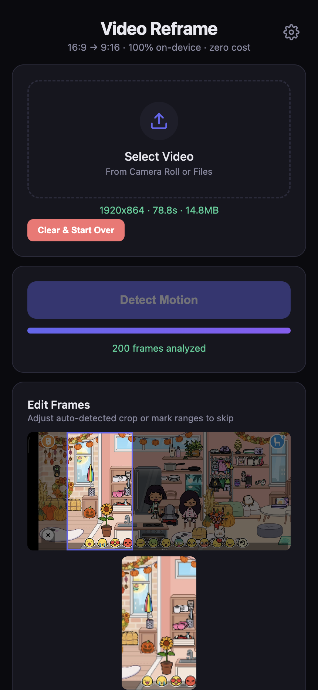
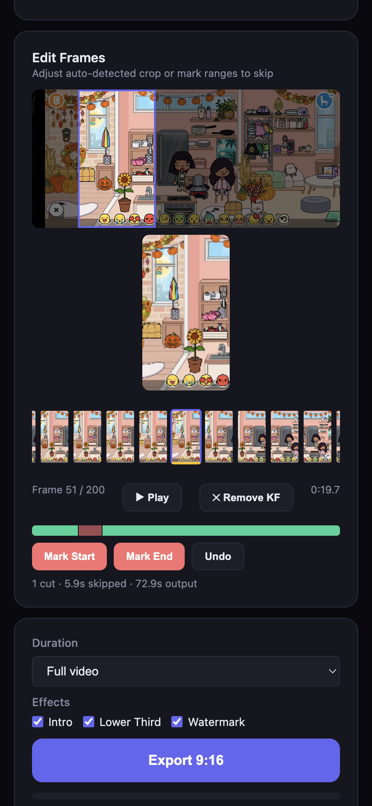
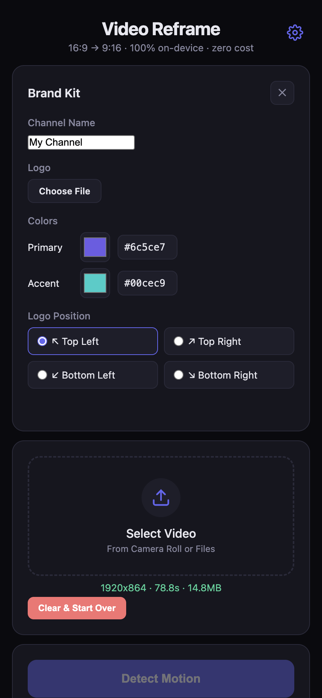
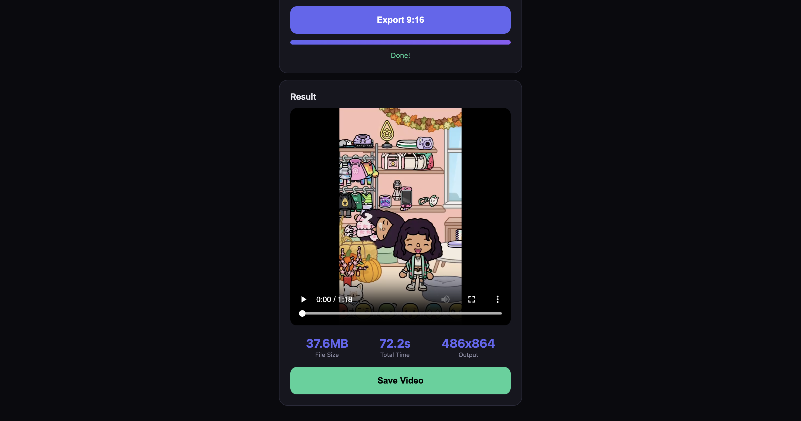

Video Reframe
How to use the app
Turn any landscape video into a perfect vertical short for Reels, TikTok & Shorts
1. Pick a Video
Tap "Select Video" from your camera roll
Step 1

1
Open the app on your phone
2
Tap the dotted box to pick a video
2. Detect Motion
The app finds where the action is
Step 2

1
Tap the purple "Detect Motion" button
2
Wait for the progress bar to fill (~10s)
3
Don't close the app while it's working!
3. Adjust the Crop
Drag left or right to move the crop box
Step 3

1
Tap any frame in the strip at the bottom
2
Drag the blue box left/right to reposition
3
The preview shows what it'll look like
4. Cut Bad Parts
Remove sections you don't want
Step 4

1
Go to the bad part, tap "Mark Start"
2
Scroll forward, tap "Mark End"
3
That part is now cut from the export!
5. Customize
Add your brand: colors, name, logo
Settings

1
Tap the gear icon (top right)
2
Set channel name & pick your colors
3
Toggle Intro / Lower Third / Watermark
6. Export & Save!
Tap the green Export button, then Save
Done!

anjanpoonacha.github.io/video-reframe